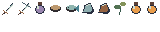

Search the Art Bible
Search works locally, including offline.
Art Bible · Other artwork
Item icons, portraits and interface artwork
Fantasy materials and crisp symbols with clear hierarchy and usable controls.
Edition 0.1.0 · Owner review pending for new reference art
On this page
16×16 and 32×32 icons
Use 16×16 for compact inventory symbols and 32×32 for larger equipment or important item artwork. Draw a separate 32×32 treatment if it needs more structure; do not simply enlarge the 16×16 source and claim equal native detail. Leave a small transparent margin and keep the object’s silhouette inside the cell.
Use selective colored outlines, upper-left highlights and a quiet interior. A sword, fishing tool, potion, ore, wood, food, fish, herb, currency and quest item must differ in silhouette before color or rarity is applied. Keep similar category scale across the collection.

Category and rarity rules
| Category | Recognition cue | Avoid |
|---|---|---|
| Weapons / tools | Distinct tip, shaft and handle orientation | Identical diagonals with tiny differing ornaments |
| Resources / ingredients | Large ore facet, log end or leaf profile | Noisy texture replacing shape |
| Potions / food / fish | Bottle neck, food mass, fish tail | Color-only identification |
| Quest items / currency | Distinct object silhouette and UI label | Permanent full-cell magical glow |
| Status indicators | Simple symbol with readable state shape | Tiny text inside a 16-pixel sprite |
| Rarity presentation | UI frame, label and optional color accent | Painting an arbitrary rarity border into every source item |
Interface materials and layout
Use restrained dark forest/slate panels, warm neutral text surfaces and small parchment or metal accents. The world sprites remain native pixel art; website text and accessible UI labels do not need to be pixelated. In-game art frames should scale through explicit border regions rather than stretching decorative corners.
Keep content hierarchy clear: primary action, item or target identity, state, then decoration. Use text labels alongside symbols where ambiguity matters. Do not hide disabled, selected or danger states in color alone. A fantasy frame that reduces legibility fails usability review.
Proposed interface study
Field satchel
Select an item to inspect its category silhouette.
Screen families
| Interface | Art and readability contract |
|---|---|
| Inventory / equipment | Consistent cell geometry, selected/focused/disabled states, readable item art and labels |
| Crafting / vocation menus | Tool/station identity; distinguish input, output and unavailable state |
| Quest journal / dialogue | Readable body text and portrait margin; no ornamental text background noise |
| World map | Simple terrain symbols and readable route/landmark hierarchy; native map art stays crisp |
| Character creation | Neutral preview light, full silhouette and accurate equipment/hair combinations |
| Skills / talents | Distinct active, passive, locked and selected art; labels remain legible |
| Bazaar Broker | Item category, price and transaction state hierarchy; decoration never obscures quantities |
| Party / guild | Readable names, roles and status; approved emblem slots |
| Health / resources | Stable bar shapes, low-state cue and numeric option; transparent world view |
Portraits and inventory illustrations
Portraits may use larger native canvases, proposed initially at 64×64 or 96×96, while retaining deliberate pixel clusters and the same material relationships. They are separate illustrations, not resized gameplay sprites or an excuse for photorealistic rendering. Record portrait density as a specific UI asset standard requiring owner approval.
Review portrait crops with dialogue text and accessibility settings. Inventory illustrations must not imply equipment is visually equipped if it is only carried. UI state and authoritative item ownership belong to their gameplay systems.
Export and QA
Deliver transparent PNGs, editable sources and all visual states. Test icons against light and dark slots and at 1× and the intended integer display scale. Check keyboard focus and selected-state contrast in actual UI integration. The sample interface here is a documentation study, not a shipped game screen.